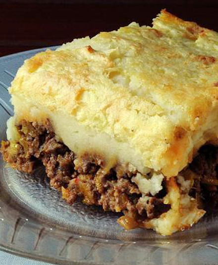

Home
Pastel de Papas

Description
I bring to you another of my favorite recipes. This is something I loved to eat when I was a kid, I would drive
my mom crazy for her to cook this meal.
Ingredients
- 1kg Potato
- ½kg Ground meat
- 1 Onion
- ½ Red pepper
- 1 clove of Garlic
- 1 stock cube
- Butter
- Milk
- Salt and Pepper
- Sweet paprika, chili and oregano
Steps
- Cut the potato into cubes and boil them with salt
- Slice the onion, red pepper and the garlic. Heat the oil in a pot or pan and sauté the onion, pepper, and
garlic.
- When the onion is translucent, add the meat and sauté it while breaking it up with a spoon.
- Season with salt and pepper, add the stock cube, garlic powder, paprika, and cook the meat for 15 minutes.
- Once the potatoes are boiled, mash them with the butter and milk. Season with salt and pepper.
-
Place a base of mashed potatoes in a baking dish, add the meat on top (let it cool slightly) and place
another layer of mashed potatoes.
- Bake in a hot oven or grill for about 15-20 minutes. Enjoy!!